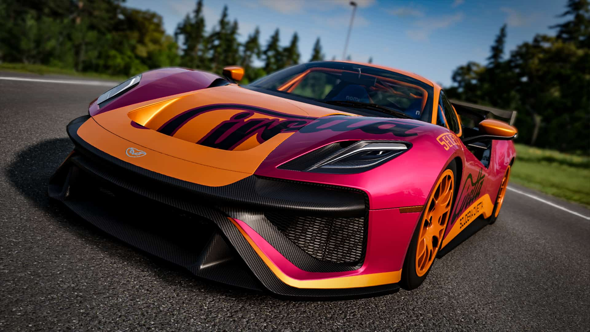
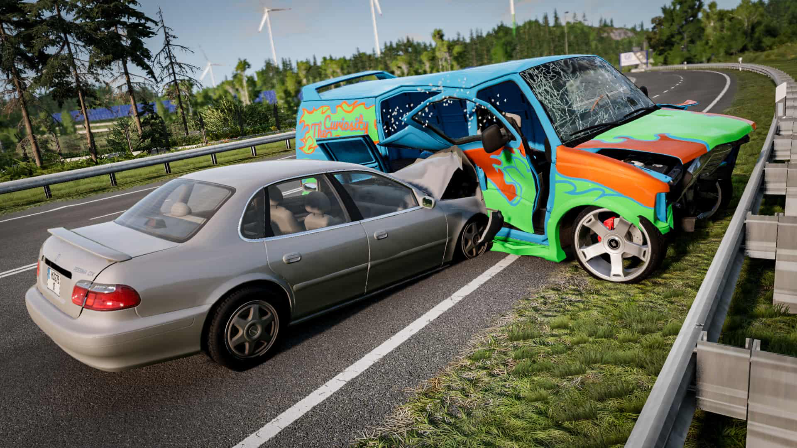
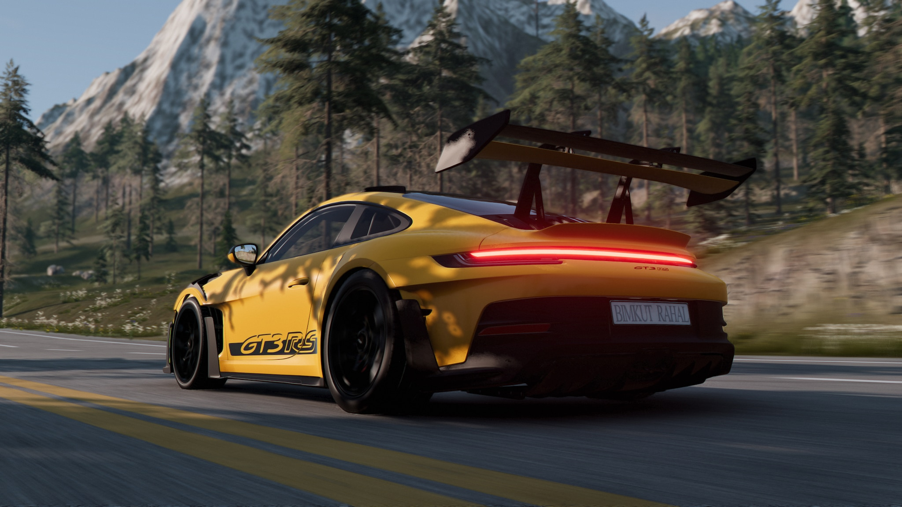
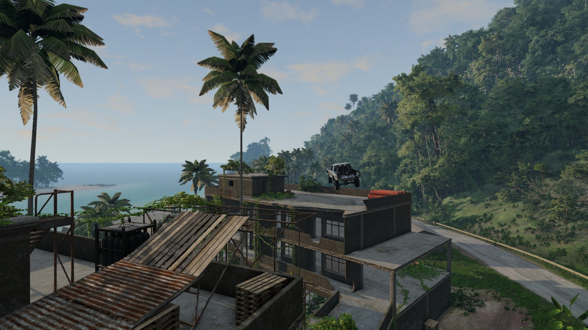
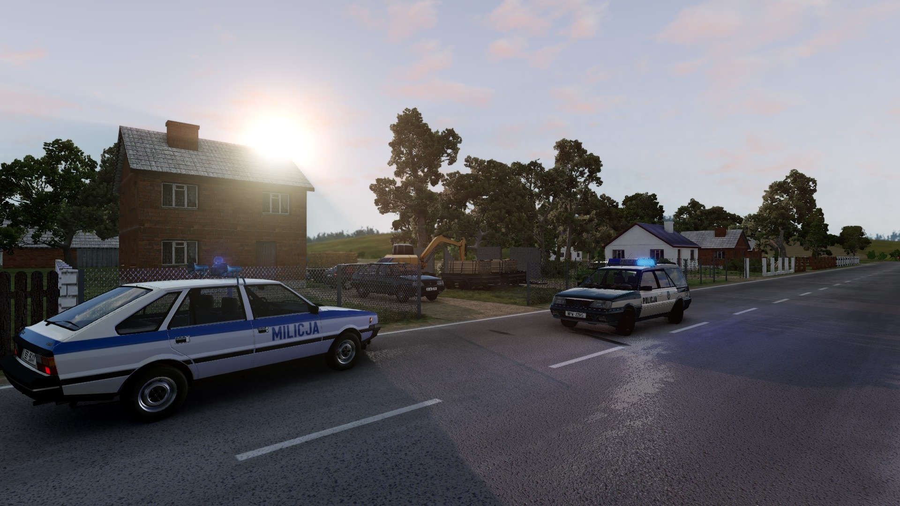
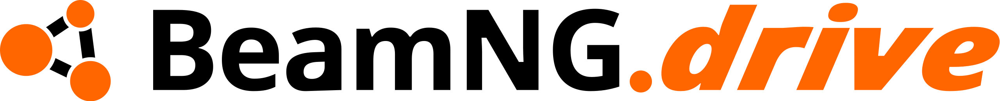

O BeamNG.drive é um jogo de condução incrivelmente realista com possibilidades quase ilimitadas. O nosso sistema de física de corpo macio simula todos os componentes de um veículo em tempo real, o que se traduz num comportamento realista. Graças aos anos de design minucioso, investigação intensiva e experiência, o BeamNG.drive recria de forma autêntica a emoção da condução real.